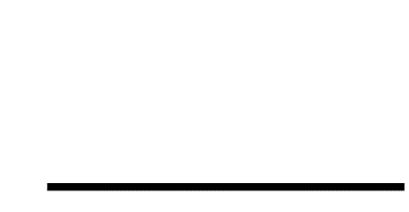

Research portfolio / 2026
Harsh Raj
Research Scholar · IIT Guwahati
Working on ISAC, IRS, MIMO, Beamforming, Machine Learning, B5G/6G Networks

Currently a PhD Student at IIT Guwahati
👤 About Me
What's New (Recent Activity)
- Publication Our co-authored journal "NOMA-Assisted ISAC System: Downlink and Uplink Performance..." has been published in IEEE Transactions on Cognitive Communications and Networking ( TCCN 2026 ).
- Conference Presented our research "Cascaded Channel Statistics and Target Detection Analysis..." at the National Conference on Communications (NCC 2025) at IIT Delhi.
- Book Chapter Co-authored a book chapter on "Machine Learning for Wireless Communications: Applications and Security" published by Springer.
🎓 Education
Ph.D. in Electronics & Electrical Engineering
2022 — PresentResearch focus on IRS-assisted ISAC, NOMA, and ML for wireless systems under Dr. Manoj B. R.
M.Tech. in Communication & Signal Processing
2020 — 2022Research focus on Image Super-resolution and Deep Learning applications under Dr. J.S. Sahambi.
B.E. in Electronics & Communication Engineering
2015 — 2019Undergraduate studies with a focus on communication systems, signal processing, and embedded electronics.
📝 Publications
NOMA-Assisted ISAC System: Downlink and Uplink Performance in Rician Fading Channels
Cascaded Channel Statistics and Target Detection Analysis for IRS-Assisted ISAC Employing NOMA
Machine Learning for Wireless Communications: Applications and Security
On the Performance of IRS-Assisted SSK and RPM over Rician Fading Channels
👨🏫 Teaching Assistantships
Principles of Communication
Undergraduate course covering analog/digital modulation, noise analysis, and receiver architectures.
Advanced Topics in Communication
Postgraduate course on reconfigurable intelligent surfaces (IRS), ISAC, and advanced signal processing.
Wireless Communications
Undergraduate elective covering multipath fading channels, diversity, MIMO, and cellular systems.
Digital Communications
Postgraduate core course on detection/estimation, signal space, and BER analysis.
Basic Electronics (Tutorial)
Undergraduate tutorial covering diodes, BJT/FET amplifiers, and operational amplifiers.
Pattern Recognition & ML
Postgraduate course on statistical classification, clustering, neural networks, and ML models.
🏆 Achievements
Professional Contributions
Active Student Member of IEEE and IEEE Communications Society (ComSoc). Contributed to the research community as a reviewer for leading international conferences and journals.
🛠️ Skills & Tools
💻 Programming & Simulation
🧠 ML & Data Science
📡 Wireless & Communication
🛠️ Research Tools

Get In Touch